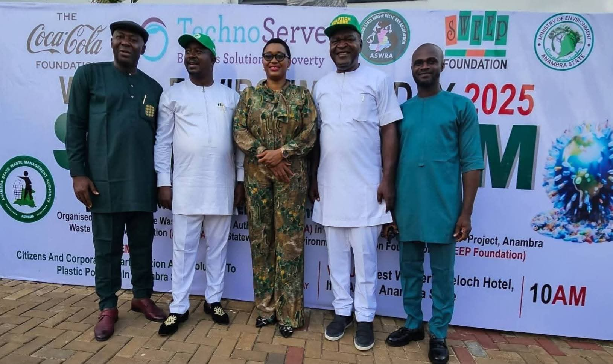
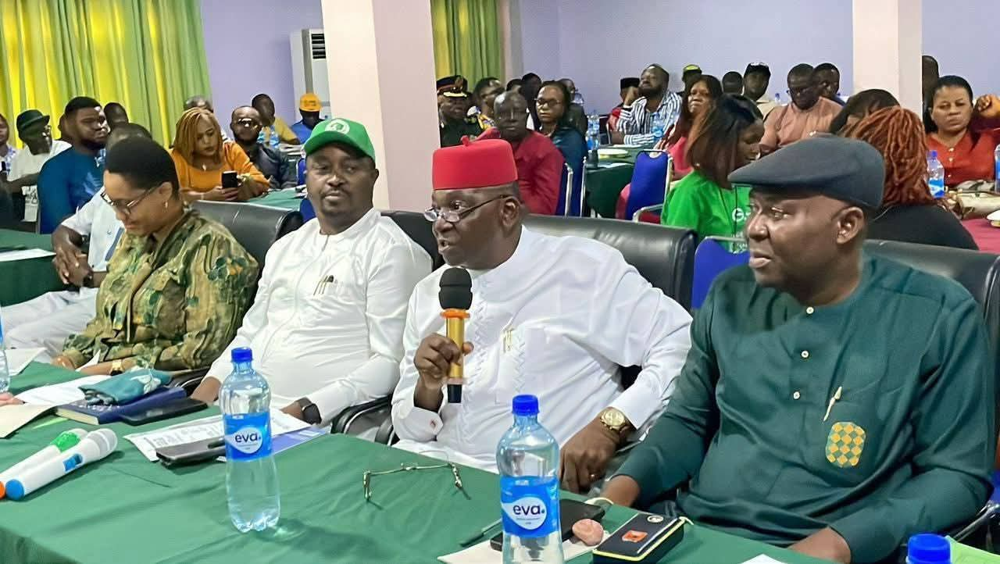

Work with ASWRA
Building a stronger recycling sector through partnership
ASWRA welcomes conversations with organisations that share a commitment to responsible recycling, environmental protection and sustainable livelihoods in Anambra State.
Partnership approach
A stronger recycling sector depends on cooperation between the people who recover materials, the businesses that process them, public institutions, communities and organisations that can support lasting improvements.
Public institutions
Engage with an organised membership association on sector concerns, responsible waste recovery, public awareness and practical collaboration.
Recycling businesses and buyers
Explore responsible connections with recyclers, aggregators and enterprises across the recycling value chain.
Producers and industry programmes
Discuss relevant recycling initiatives and possible participation, subject to programme rules and eligibility.
Development and community organisations
Explore capacity development, environmental education and community initiatives that align with shared objectives.

Possible areas of collaboration
- Training and skills development for waste recyclers.
- Responsible collection, sorting and recovery of recyclable materials.
- Market information and connections between recyclers and legitimate buyers.
- Environmental awareness and community engagement.
- Research, practical learning and responsible industry development.
This page does not announce existing partnerships, approved funding, guaranteed market access or confirmed programmes. Any collaboration will be described publicly only after the relevant parties have formally agreed.
Start a conversation
Tell the ASWRA State Secretariat about your organisation, the area you are interested in and how you hope to work together.
Working together
What effective collaboration can contribute
Partnerships are most useful when they respond to a clearly identified need, have realistic responsibilities and provide value to the people and communities involved. Depending on the partner's mandate and available resources, collaboration may focus on one or more of the following areas.
Technical knowledge and training
Practical instruction, safety guidance, operational standards and access to relevant technical expertise can help improve the quality and reliability of recycling activities.
Markets and material recovery
Responsible buyers and processors can clarify material specifications, quality expectations, weighing practices and purchasing arrangements so that participants understand the requirements before trading.
Research and innovation
Educational institutions and technical organisations can explore local challenges, test appropriate approaches and share evidence that supports better decisions in the recycling sector.
Community engagement
Community groups, public institutions and development organisations can support awareness, source separation and responsible participation in local recovery initiatives.

Principles for working together
ASWRA seeks to approach potential collaborations with clarity and accountability. A discussion is not a confirmed partnership, and an expression of interest does not create an obligation for either party.
- Agree on the purpose, expected outcomes and responsibilities before work begins.
- Respect each organisation's mandate, policies and approval processes.
- Be transparent about costs, resources, eligibility and limitations.
- Protect personal information and obtain appropriate consent before sharing it.
- Communicate progress honestly and publish claims only when they are verified and approved.
How partnership engagement can progress
ASWRA welcomes conversations that can strengthen recycling and resource recovery. A clear, practical proposal helps the Association understand the intended outcome and whether the idea aligns with its purpose and current capacity.
1. Introduce the idea
Share the organisation or individual proposing collaboration, the challenge being addressed and the intended beneficiaries or participants.
2. Define the scope
Outline the proposed activity, location, materials or audience involved, timeframe, responsibilities and any resources required.
3. Discuss alignment
Clarify how the proposal fits ASWRA’s objectives, what each party may contribute, and what approvals or conditions would be needed before proceeding.
4. Confirm next steps
Only proceed after responsibilities, commitments, communication and relevant arrangements are agreed and confirmed by the parties.
Principles for a constructive partnership
- Clear objectives and realistic expectations.
- Respect for members, communities and relevant regulations.
- Transparent roles, commitments and decision-making.
- Responsible handling of personal and organisational information.
- No public claims of endorsement or confirmed partnership without permission.